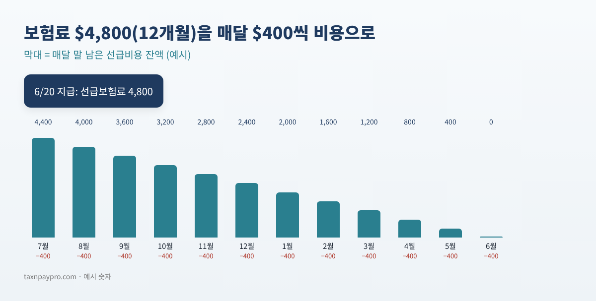
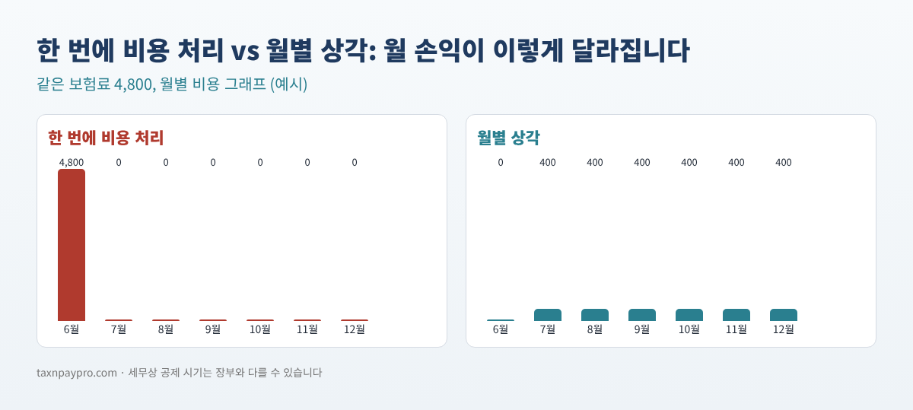

6월에 1년치 보험료를 냈고, 3월에 소프트웨어 연간 요금을 갱신했고, 11월에는 내년 2월 박람회 부스 비용을 미리 냈습니다. 이제 월말 마감입니다. 이 중 얼마가 이번 달 비용일까요?
낸 날 전부 비용으로 처리하면 달마다 이익이 크게 출렁이고, 대차대조표에는 이미 낸 미래 몫이 보이지 않습니다. QuickBooks에는 선급비용 상각 스케줄 기능이 따로 없어서 많은 분들이 복잡한 엑셀로 관리하거나 아예 잊어버립니다. 이 글은 QuickBooks Desktop·Online에서 직접 할 수 있는 깔끔한 방법과 직접 입력할 수 있는 엑셀 수식을 알려 드립니다.
이런 분께: 발생주의 장부를 쓰면서 보험료, 연간 소프트웨어, 면허, 행사 선금 등을 미리 내는 사업자와 북키퍼.
선급비용은 앞으로 여러 달 동안 쓸 것을 미리 낸 돈입니다. 낸 날에는 자산입니다(1년치 보장을 가지고 있으니까요). 매달 그중 한 달 몫을 쓰고, 그만큼을 비용으로 옮깁니다.

선급비용 하나에 한 줄씩 씁니다. 입력할 것은 지급액, 서비스 시작 월, 개월 수, 지급일 네 가지뿐입니다. 2026년 12월 마감 예시입니다 (예시 숫자).
| 항목 | 지급액 | 시작 월 | 개월 수 | 월 상각액 | 2026년 12월 | 남은 잔액 |
|---|---|---|---|---|---|---|
| General liability insurance | 4,800.00 | Jul 2026 | 12 | 400.00 | 400.00 | 2,400.00 |
| Accounting software (annual) | 1,199.00 | Mar 2026 | 12 | 99.92 | 99.92 | 199.80 |
| Trade show booth | 2,500.00 | Feb 2027 | 1 | 2,500.00 | 0.00 | 2,500.00 |
| Business auto insurance | 2,160.00 | Oct 2026 | 6 | 360.00 | 360.00 | 1,080.00 |
| Professional license renewal | 600.00 | Jan 2026 | 12 | 50.00 | 50.00 | 0.00 |
| 합계 | 909.92 | 6,179.80 |
표 1. 2026년 12월 기준 선급비용 스케줄 예시.
마감할 월말 날짜를 H1에 넣습니다 (예: 2026-12-31). 2행 항목의 지급액이 B2, 서비스 시작 월이 C2(그 달의 아무 날짜), 개월 수가 D2일 때:
| 열 | 수식 | 의미 |
|---|---|---|
| 월 상각액 (E2) | =ROUND(B2/D2,2) | 정액, 센트 단위 반올림 |
| 몇 번째 달 (I2) | =(YEAR($H$1)-YEAR(C2))*12+MONTH($H$1)-MONTH(C2)+1 | 1 = 서비스 첫 달 |
| 이번 달 (F2) | =IF(OR(I2<1,I2>D2),0,IF(I2<D2,E2,B2-E2*(D2-1))) | 끝전은 마지막 달에 |
| 남은 잔액 (G2) | =B2-IF(I2<1,0,IF(I2<D2,E2*I2,B2)) | 아직 남은 선급비용 |
표 2. 수식 네 개. 모든 항목에 아래로 복사하면, 합계가 바로 분개 금액이 됩니다.
마지막 달 규칙이 중요한 이유: 1,199 ÷ 12 = 99.9166…입니다. 12개월 모두 99.92를 넣으면 1,199.04가 되어 4센트가 더 잡힙니다. 11개월은 99.92, 마지막 달은 99.88로 하면 합계가 정확히 1,199.00이 됩니다.
"이번 달" 금액을 계정별로 묶습니다. 예시의 2026년 12월은:
| 계정 | 차변 | 대변 |
|---|---|---|
| Insurance Expense | 760.00 | |
| Software & Subscriptions | 99.92 | |
| Dues & Licenses | 50.00 | |
| Prepaid Insurance | 760.00 | |
| Prepaid Expenses | 149.92 | |
| 합계 | 909.92 | 909.92 |
표 3. 2026년 12월 상각 분개 (예시 숫자), 날짜 2026-12-31.
상각 템플릿은 Scheduled가 아니라 Reminder 또는 Unscheduled로 만드세요. Scheduled는 매달 같은 금액을 자동 입력하지만, 항목이 시작·종료되거나 끝전 달이 오면 합계가 바뀝니다. Recurring transactions는 모든 Online 요금제에 있지는 않습니다 (Intuit 커뮤니티 답변에 따르면 Simple Start에는 없음). 없으면 매달 직접 입력하세요.
입력 후 같은 월말 기준 대차대조표를 실행하고, 선급 계정별 잔액을 스케줄의 "남은 잔액" 합계와 비교합니다.
| 선급 계정 | 스케줄 | 대차대조표 | 차이 |
|---|---|---|---|
| Prepaid Insurance | 3,480.00 | 3,480.00 | 0.00 |
| Prepaid Expenses | 2,699.80 | 2,799.72 | 99.92 |
표 4. 대조 예시. 차이 99.92는 소프트웨어 한 달 상각이 빠졌다는 뜻입니다.

많은 소규모 사업체는 금액이나 기간 기준을 정해 작은 항목은 바로 비용 처리합니다. 회계사와 일관된 기준을 정하세요.
항상 같지는 않습니다. 선급비용을 언제 공제할 수 있는지에 대한 세법 규정은 장부상 상각과 다를 수 있습니다. 신고서에서 어떻게 처리하는지 세무 담당자에게 확인하세요.
환급금은 선급 계정에서 빼고, 환급되지 않는 남은 금액은 비용 처리한 뒤, 그 항목의 남은 개월을 0으로 바꿉니다.
현금주의 장부에서는 보통 낸 때 비용으로 처리하므로, 선급비용 스케줄은 주로 발생주의 장부에서 쓰는 방법입니다.
위 과정을 그대로 해 주는 선급비용 상각 스케줄러 2026-2027은(는) 아래 무료 키트 다운로드에서 가입 없이 무료로 받으실 수 있습니다(엑셀 + PDF 가이드).
이 글은 교육용이며 세무·법률·회계 자문이 아니고, 결과는 각자의 기록에 따라 다릅니다. 메뉴 이름은 바뀔 수 있습니다. QuickBooks는 Intuit Inc.의 등록 상표이며, 이 글은 Intuit과 제휴·보증 관계가 없습니다.
출처: Intuit "Prepaid expenses" 도움말 (2026-08-03 갱신): https://quickbooks.intuit.com/learn-support/en-us/help-article/expense-accounting/prepaid-expenses-amortization/L0aBbAeMQ_US_en_US · Intuit "Create recurring invoices and other transactions in QuickBooks Online" (2026-08-05 갱신): https://quickbooks.intuit.com/learn-support/en-us/help-article/recurring-transactions/create-recurring-transactions-quickbooks-online/L3WoKX2R8_US_en_US · QuickBooks 커뮤니티 (반복 거래와 요금제): https://quickbooks.intuit.com/learn-support/en-us/reports-and-accounting/re-what-level-quickbooks-online-includes-automatic-monthly/01/1098255/highlight/true